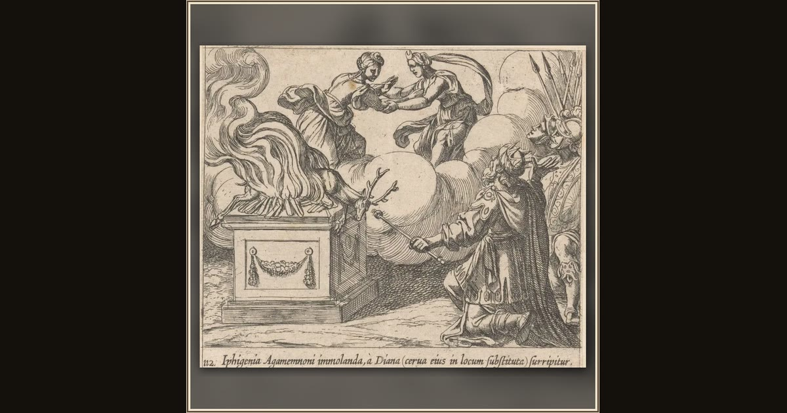

Agamemnon offert Iphigenia (Iphigenia Agamemnoni immolanda, à Diana (cerva eius in locum substituta) surripitur)
Antonio Tempesta (printmaker); Pieter de Jode (I) (publisher) · 1606 · rijksmuseum
Diana draws Iphigenia away from a burning altar as a hind takes her place in this print; the chorus says it did not see what followed (248). Explore its place in Aeschylus's Plays, Agamemnon, line 240.